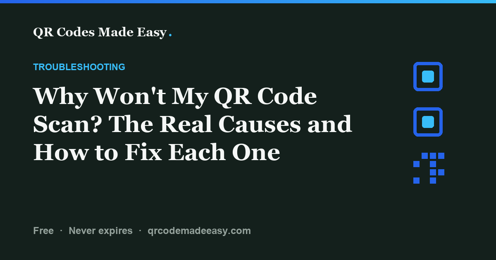

Why Won’t My QR Code Scan? A Step-by-Step Fix

First, separate a scanning failure from a destination failure. If the phone does not recognize the pattern, check the image, size, contrast, margin, and placement. If it recognizes a link but the page does not open, check the exact destination, access permissions, and any redirect service.
For a code you are about to print, use the print-proof checklist. It checks both halves of the job.
Start with what the phone does
| What happens? | Check next | Try this |
|---|---|---|
| No QR prompt appears. | The image and scanner setup. | Try the original export, clean the lens, adjust distance, and use a plain dark-on-light code. |
| The file scans, but the printed piece does not. | The final print, size, and placement. | Compare with a flat paper proof. Check margin, glare, scaling, and sharpness. |
| A link appears, but the page fails. | The exact URL and access settings. | Open the decoded URL in a browser without your signed-in account. |
| A Wi-Fi prompt appears, but joining fails. | The network name, credentials, security mode, and phone support. | Test manual joining and the guest network. Follow the Wi-Fi checks. |
Change one thing at a time so you know what helped. Keep the original file and use a copy for design experiments.
The pattern is too small for the distance
If moving the phone closer helps, the modules may be too small for that camera at the intended distance. Give the pattern more space or move the sign where people can approach it safely. Too close can also prevent a camera from focusing; move back slowly and let it focus.
Distance divided by 10 can give you a starting point for pattern width, but it is not a universal scan limit. Dense patterns, lighting, and print quality matter. Use the print-size guide and calculator, then test the finished layout.
Colors do not give the scanner a clear pattern
Try a plain black or dark navy code on white. Keep the surrounding margin light too. Pale modules, a busy photograph behind the code, or reflections can make it harder to distinguish the squares.
Some readers can handle an inverted code, but do not assume all your visitors' phones will. A dark pattern on a light background is a more conservative choice. If a plain version works and the branded version does not, adjust the colors before changing anything else. See color and contrast guidance.
The blank margin was cropped or crowded
For a standard QR code, DENSO WAVE specifies a four-module-wide quiet zone on all sides. A module is one small square in the grid. The margin helps the reader distinguish the symbol from nearby content.
Re-export with the margin intact. Keep text, borders, pictures, folds, and trim outside it. Adding space around a code cannot restore modules that were cropped out of the pattern itself; use the original export in that case.
A logo or styling hides important information
Remove the logo and return to square modules. If the plain version works, reintroduce changes one at a time. Avoid covering the corner finder patterns or other structural patterns. The center is not automatically clear: alignment patterns can appear there in some versions.
Error correction can help recover damaged data, but its percentages describe codewords, not a safe share of image area to cover. There is no universal “20–30% logo allowance.” A higher correction setting may also make the code denser. Follow the logo guide and test your exact payload and design.
The print or placement changes the image
- Soft edges or stretching: use a suitable PNG or SVG export rather than a screenshot. Keep the image square. Ask the printer for its image requirements.
- Glare: compare a flat paper proof with the final laminated, glass-covered, or glossy version. Move the sign or light source, or try a matte finish.
- Curves and folds: put the entire pattern on a flatter area. A larger code does not automatically fix distortion around a tight curve.
- Wear: replace faded, dirty, or damaged signs. Do not rely on error correction as a maintenance plan.
A screen check cannot reproduce ink spread, a reflective frame, or the way a label wraps around a bottle. Test one real sample before ordering the batch.
The code scans, but the destination does not work
Open the exact decoded URL. Look for a typo, a removed page, an expired domain, a login requirement, or a document that is shared only with you. A private-browser test can reveal access problems that your own account hides.
If the code contains a provider's redirect address, check that provider's status and plan terms. A redirect can be paused or changed; what happens after cancellation varies by service. Some problems can be repaired at the destination or provider without replacing the printed code. If you cannot restore the exact encoded address or its redirect, you may need a replacement code.
A static code has no built-in expiry, but its linked content still needs to stay available. See how to check static and dynamic codes. For documents, follow the PDF sharing guide; for forms, check respondent access.
Finish with a real proof
- Scan the exported file and confirm the intended action.
- Print one proof at the final size and position it where it will be used.
- Try more than one phone, at the intended distance and in normal lighting.
- Confirm that the page opens, form is usable, or Wi-Fi joining works.
- Record any failure, fix it, and repeat before ordering.
Download the one-page print checklist (PDF) to record your test. These checks help you isolate a problem; they are not a guarantee for every device or setting.
Technical references
DENSO WAVE documents QR margins and error correction. The decision table is a troubleshooting workflow, not a claim about how often each problem occurs.
FAQ
Why will my QR code not scan?
If the phone does not recognize the pattern, check image quality, size, distance, contrast, quiet zone, and styling. If it recognizes a link but the page fails, check the exact destination and its access settings.
Why does the file scan but the printed piece fail?
The printed piece can introduce small modules, blur, cropped margins, glare, folds, or distortion. Compare the original export with a flat paper proof, then test the actual material and placement.
How do I fix a QR code that will not scan?
Try the original export without a logo, with dark modules on a light background and the full blank margin. Adjust the distance and print size, then test one finished proof on more than one phone. Change one thing at a time.
Why does a QR code work on some phones but not others?
Cameras, focus, scanner software, and supported payload types vary. Simplify the design and improve the print setup rather than relying only on a phone that happens to work. For Wi-Fi, test joining as well as recognition.
Can a QR code wear out or expire?
A static QR pattern has no built-in expiry, but the printed image can wear out and its destination can become unavailable. Dynamic codes depend on the redirect service and its terms. Check the image and destination separately.
Can I fix a broken destination without reprinting?
Sometimes. Restoring the exact encoded URL, correcting access permissions, or repairing a provider redirect can preserve the printed code. If you cannot restore that address or redirect, you may need a replacement code.
Make your code, then test the proof.
Free PNG and SVG downloads. No account or subscription.
Build your QR code